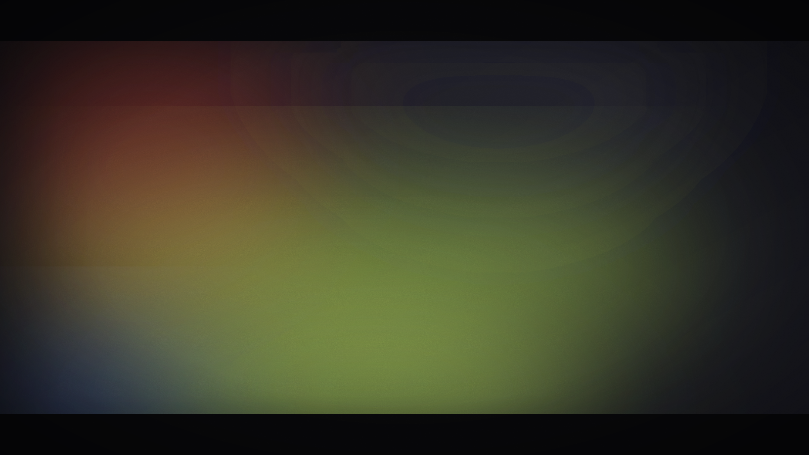
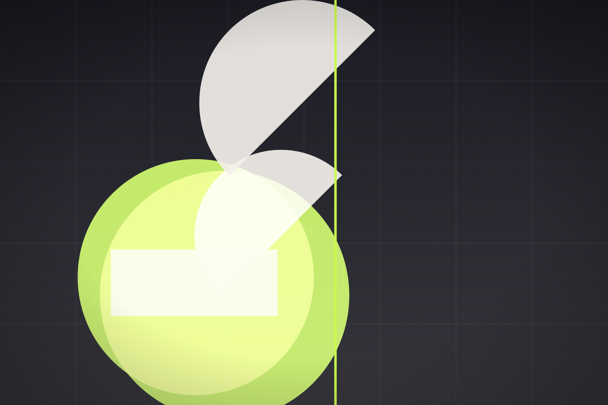
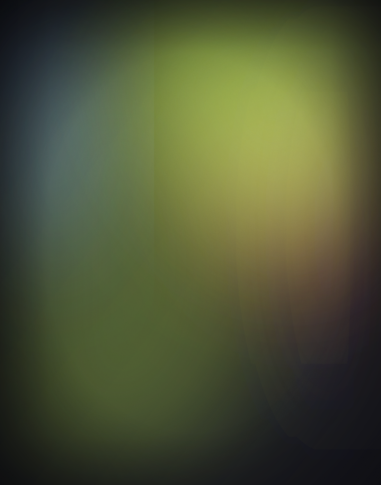
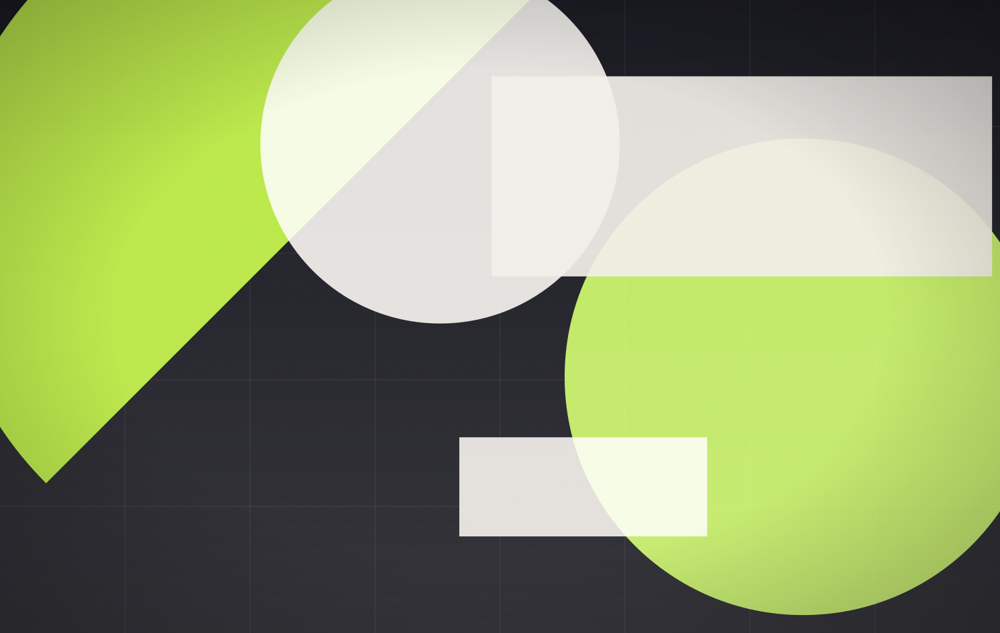
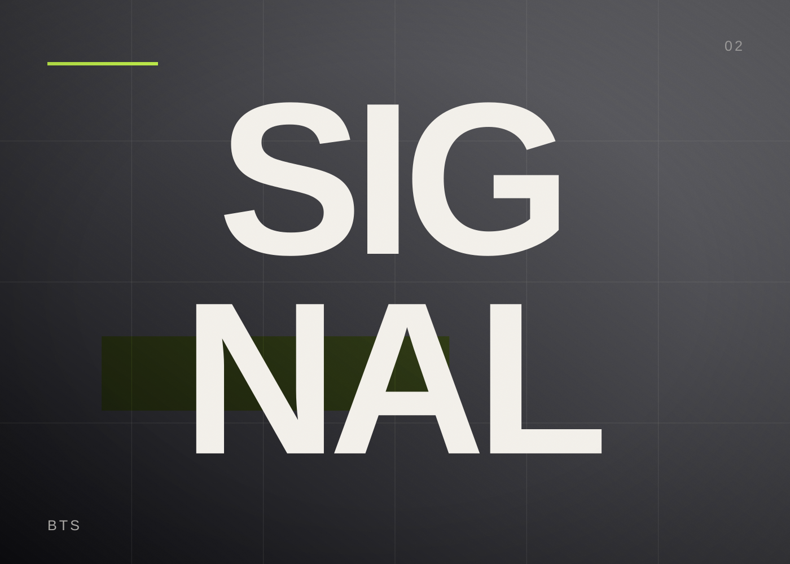

Signal
Sixty-plus social templates that let a small team publish daily without ever looking generic.

Aether Audio
Aether Audio ships a product every six weeks and was publishing with one-off graphics made in a hurry. The system had to make the fast path the beautiful path: modular frames, fixed type roles and a colour logic that survives whatever photo arrives from the studio.
Templates were built for every format — announcements, quotes, carousels, equaliser posts and launch films — then handed over with motion presets so the in-house team could animate without opening a blank composition.
A design system is only real when the fastest way to use it is also the best-looking one.


Four moves, every project
-
01
Audit
Eighteen months of posts sorted into what felt ownable, what felt generic and what was missing.
-
02
Modules
Frame library with fixed type roles, image ratios and a two-accent colour logic.
-
03
Motion presets
After Effects rigs for entrances, equalisers and product callouts, exported as templates.
-
04
Handover
A compact guide plus working files so the team can ship without a designer in the loop.
Drag the handle — draft vs. final


Before AfterSoftware & craft
- Figma
- After Effects
- Photoshop
How it actually happened
The whole system was stress-tested by rebuilding two real campaigns inside it before anything was documented.
